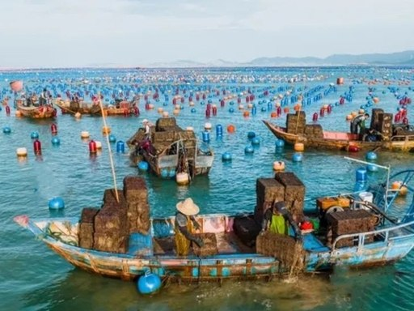
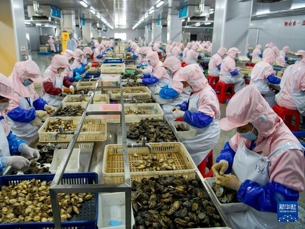

重点突出
促进渔民增收带动就业推动乡村振兴打造惠来鲍鱼品牌文旅研学与海洋科普融合
小鲍鱼撬动大经济
一枚鲍鱼连接起养殖户、加工车间、物流渠道和消费市场。前詹鲍鱼产业推动沿海经济发展，也带动品牌建设、科技应用和文旅融合，成为乡村振兴的蓝色引擎。育苗场里技术员精心护苗，养殖排上渔民日夜管养，加工车间里工人分级打包，电商直播间里主播热情推介——每个环节都创造着就业岗位与收入来源，沿海群众的腰包随着鲍鱼一起“鼓”了起来。
产业的蓬勃发展还带动了冷链仓储、渔需物资、餐饮民宿等配套行业，形成“一业兴、百业旺”的良性循环。镇村两级因势利导，完善基础设施、强化技术培训、培育乡土人才，让群众在产业链上持续增收。

一线养殖作业 惠来鲍鱼出货
惠来鲍鱼出货向海兴产新貌
品牌与共富
“惠来鲍鱼”品牌影响力不断提升，产品远销海内外市场；与此同时，海上牧场科普、渔事体验等文旅项目让渔业资源变身旅游资源，文旅研学与海洋科普深度融合，进一步放大产业价值。面向未来，前詹镇将持续推进生态养殖、精深加工与品牌建设，让碧海银滩真正成为群众的“金山银山”，在向海而兴的道路上稳步前行。